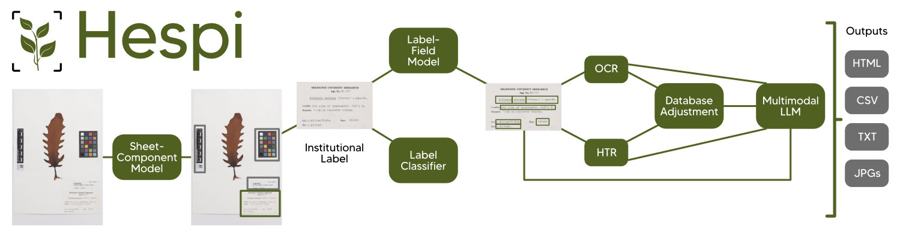

Pipeline
The Sheet-Component Model
This model takes specimen sheet images and outputs bounding boxes for 11 components:
institutional label
data on the specimen sheet outside of a label (‘original data’; often handwritten)
taxon and other annotation labels
stamps
swing tags attached to specimens
accession number (when outside the institutional label)
small database labels
medium database labels
full database labels
swatch
scale
The Label-Field Model
The Label-Field Model takes any institutional label detected from the Sheet-Component Model and detects bounding boxes for the following fields:
family
genus
species
infrasp_taxon
authority
collector_number
collector
locality
geolocation
year
month
day
Label Classifier
We have trained a classifier to detect the following types of writing on the institutional label:
typewriter
printed
handwritten
combination
Text Recognition
The text from each field detected from the Label-Field Model is recognized in the Text Recognition module. This uses one of two engines. If the text was determined to be printed or written using a typewriter, then the Text Recognition module uses the Tesseract Optical Character Recognition (OCR) engine. If the text was determined to be hand-written or a mixture, then the TrOCR Handwritten Text Recognition (HTR) model is used.
Post-processing and Outputs
After the text for each field is recognized, Hespi performs some postprocessing steps. These involve ensuring that the family and genus are capitalized and the species is not. The family, genus and species is cross-checked again a database of known entities for each category and it chooses the most similar name if it has a higher similarity than 0.8 using the Gestalt approach. Hespi then produces a directory of outputs with the predictions of each model which includes CSV, text and cropped image files. To summarize the whole output, it also generates an HTML report which displays the cropped images from each model and the recognized text.